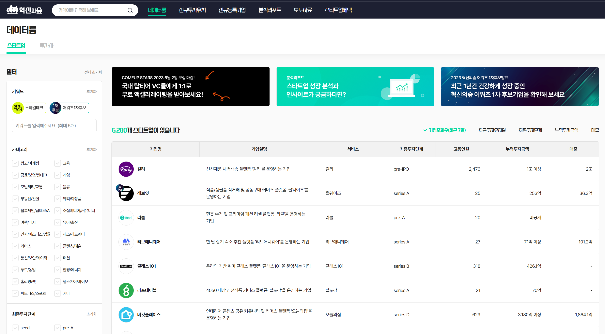
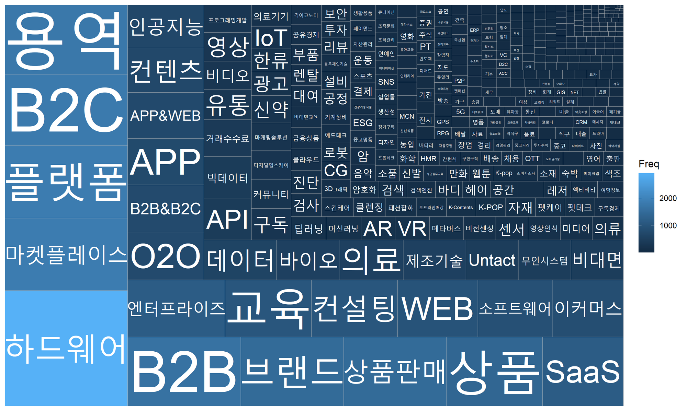
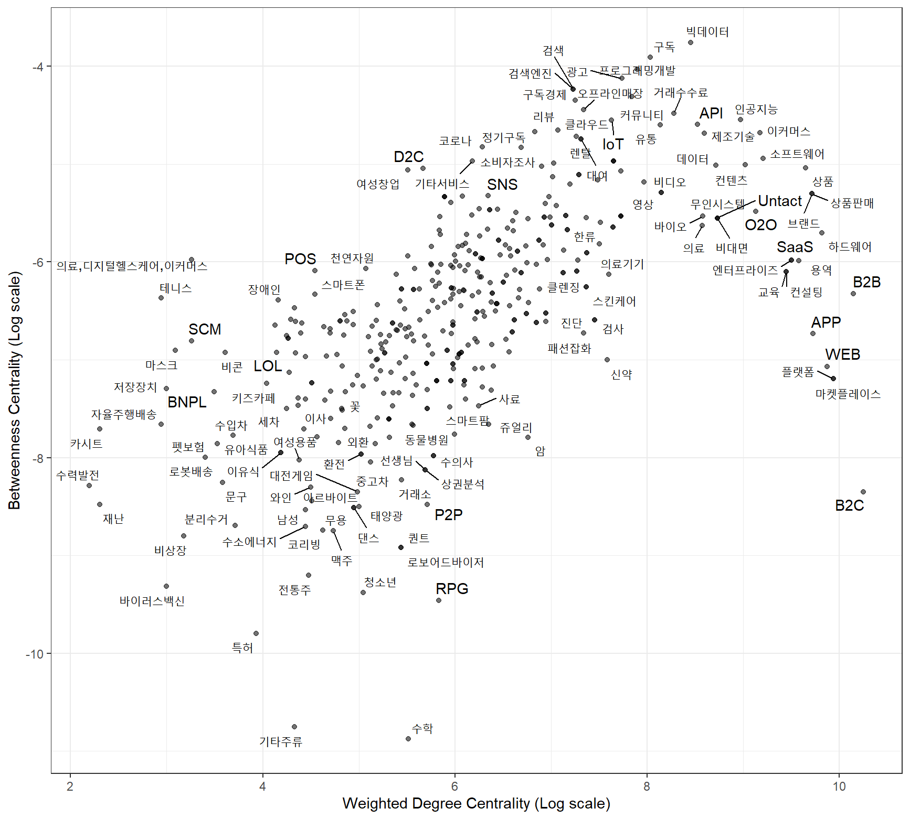

| 기업명 | 기업설명 |
|---|---|
| 서울옥션 | 미술품 경매 서비스 플랫폼 ‘서울옥션’, ’블랙랏’을 운영하는 기업 |
| 한국산업은행 | 한국산업은행법에 의해 설립된 특수은행 |
| 아산나눔재단 | 청년창업 지원 및 교육사업, 협력사업을 전개하는 현대그룹의 재단 |
| 케이옥션 | 미술품 경매 서비스 ’케이옥션’을 운영하는 기업 |
| 민다 | 한인 숙소 숙박 예약 플랫폼 ’민다’를 운영하는 기업 |
| 대학내일 | 트렌드 미디어 ‘캐릿’ 운영 및 광고/마케팅 솔루션을 제공하는 기업 |
| 샤페론 | 아토피 피부염 치료제를 개발하는 기업 |
| 자연인 | 천연화장품 브랜드 ’아이소이’를 운영하는 기업 |
| 리본즈코리아 | 명품 신제품/빈티지 제품 커머스 및 렌트 서비스 플랫폼 ’리본즈’를 운영하는 기업 |
| 이그린글로벌 | 마이크로튜버기술 기반 씨감자 종자를 개발하는 기업 |
| 파킹클라우드 | 클라우드 기반 스마트 주차장 관리 및 검색 서비스를 제공하는 기업 |
| 아이헤이트플라잉버그스 | 에듀테크 기반 중고등 온라인 영어, 수학 과외 플랫폼 ’밀당PT’를 운영하는 기업 |
| 버튼테크놀로지 | 대리운전 콜 플랫폼 ’버튼대리’를 운영하는 기업 |
| 머스트잇 | 온라인 명품 커머스 플랫폼 ’머스트잇’을 운영하는 기업 |
| 라이칸스로프 | 대한민국의 레저스포츠 랜턴 전문 기업 |
| 선을만나다 | 정부 중앙부처와 산하기관, 스타트업의 홍보기획과 대행 기업 |
| 에이팀벤처스 | 제조 업체 매칭 플랫폼 ’카파’를 운영하는 기업 |
| 티켓몹 | 공연·페스티벌 전문 소셜 큐레이션 서비스 ‘꽃가마’ 개발 기업 |
| 500비디오스 | 모바일 기반 비디오 명함 제작 플랫폼 ’500비디오스’를 운영하는 기업 |
| 스리체어스 | 저널 디지털 퍼블리싱 플랫폼 ’북저널리즘’을 운영하는 기업 |
디지털전환 스타트업 생태계
투자유치 주요 요인들에 대한 탐색적 분석
2023 정보통신정책학회
글로벌 워크샵
2023-06-23
이창준 1, 이경선 2, 박유리 3
1 Media & Social Informatics. Hanyang University ERICA
2,3 Korea Information Society Development Institute
What is Digital Transformation?
DT(Digital Transformation)는 비즈니스의 모든 영역에 디지털 기술을 통합하는 것
이러한 근본적인 변화는 비즈니스 운영 방식과 고객에게 가치를 제공하는 방식을 근본적으로 재고하게 함
이는 단순한 기술적 변화가 아니라 조직이 지속적으로 현 상태에 도전하고 실험하고 실패에 익숙해져야 하는 문화적 변화
전통적인 비즈니스 방법 및 프로세스에서 근본적인 패러다임 전환

Motivation
-
다양한 기술이 접목되며 빠르게 디지털화가 진행 중인 제조업과 달리 서비스업의 디지털 전환은 더디게 진행
- 우리나라 서비스 산업은 낮은 생산성, 규모의 영세성이라는 구조적 문제로 기술 혁신과는 다소 거리가 있음
-
그러나 코로나19로 디지털 전환이 선택이 아닌 생존의 문제로 부상하며 일부 분야, 일부 기업들을 시작으로 서비스 산업에서도 다양한 DT 시도들이 진행
다양한 서비스 분야에서 디지털 기술을 접목하기 위한 기술기반 기업들이 등장하며 디지털화가 진행
디지털 기술의 접목으로 데이터가 수집, 축적되며 서비스 방식이 변화하고 새로운 가능성도 열리고 있음
-
디지털 대전환을 우리의 기회로 활용하기 위해 서비스 산업의 디지털 전환 현황을 진단하고 이를 촉진하기 위한 연구가 필요
- DT는 주로 스타트업 생태계 내에서 새로운 비즈니스 모델을 통한 혁신이 많이 일어나는 분야이기 때문에 스타트업 생태계 다이내믹스에 대한 분석이 필요함
Why is DT Industry Classification Difficult?
-
다양한 정도의 디지털 성숙도
서로 다른 산업, 심지어 같은 산업 내의 비즈니스도 서로 다른 디지털 성숙도 단계로 존재.
획일적인 분류 시스템(one-size-fits-all classification)은 이러한 변형을 잘못 나타낼 가능성이 있음.
-
기술의 급속한 발전
디지털 환경은 빠르게 변화.
기술 혁신은 디지털 변환의 특성과 범위를 지속적으로 변경하여 고정된 분류 시스템을 빠르게 도태시킴.
-
다른 DT 접근 방식
- 같은 산업에 속한 회사들도 DT에 대한 접근 방식이 크게 다를 수 있음.
-
고유한 비즈니스 모델
- 디지털 혁신은 전통적인 산업 분류를 거부하는 새롭고 고유한 비즈니스 모델을 지속적으로 탄생시킴(Mutation).
Research Goal
-
디지털 트랜스포메이션 생태계 분석을 위한 프레임 개발
산업: 디지털 트랜스포메이션 산업 구분
기술 융합: 디지털 트랜스포메이션 비즈니스 모델과 기술의 융합 추이 분석
조직: 디지털 트랜스포메이션 기업의 조직 다이내믹스 분석
-
산업, 기술 융합, 조직의 세 가지 프레임을 활용한 투자 유치 예측 모델 개발
투자 유치 예측 모델 비교 및 성능 평가
디지털 트랜스포메이션 생태계에서 투자 유치에 끼치는 주요 요인 탐색
Data comes from
혁신의숲(www.innoforest.co.kr)
Data comes from
About data
-
혁신의숲(www.innoforest.co.kr)
스타트업들의 사업과 기술 등을 분석하여 투자자와 소비자들에게 정보를 제공하는 서비스를 제공
4,709개의 기업에 대한 데이터 (May 2022)
혁신의숲 DB 중 제공 정보 목록
| 구 분 | 제공 정보 |
기업개요 |
기업 고유 아이디, 기업명, 대표자명, 사업자등록번호, 사업장주소, 카테고리, 기업 속성 분류, 기업설명, 최근 투자이력, 가장 높은 투자 단계, 투자유치금액의 합계, 법인설립일, 기업 홈페이지 URL, 국내 상장시장 구분 |
서비스 |
기업 고유 아이디, 서비스 고유 아이디, 기업명, 서비스명 |
소비자거래액 |
기업 고유 아이디, 기업명, 소비자거래 기준월, 소비자거래액, 소비자거래건수 |
재구매율 |
기업 고유 아이디, 기업명, 소비자거래 기준월, 재구매주기구분, 재구매율 |
평균구매횟수 |
기업 고유 아이디, 기업명, 소비자거래 기준월, 평균구매주기구분, 구매건수 |
성별연령별거래 |
기업 고유 아이디, 기업명, 소비자거래 기준월, 성별구분, 나이구분, 거래점유율 |
가족구성별거래 |
기업 고유 아이디, 기업명, 소비자거래 기준월, 가구속성구분, 거래점유율 |
소득별거래 |
기업 고유 아이디, 기업명, 소비자거래 기준월, 소득구분, 거래점유율 |
트래픽 |
기업 고유 아이디, 기업명, 서비스 고유 아이디, 서비스명, 트래픽 기준월 |
소셜 |
기업 고유 아이디, 버즈시작일, 버즈량, SRS |
투자유치이력 |
투자유치이력 아이디, 기업 고유 아이디, 기업명, 투자단계, 참여 투자자, 투자일자, 투자금액 |
특허 |
기업 고유 아이디, 기업명, 특허 고유 아이디, 특허출원일, 특허출원번호, 출원인, 현재소유자, 특허권리현황구분, 특허권리최종현황구분, 특허명, 특허요약, 특허공개번호, 특허공개일, 특허등록번호, 특허등록일, 특허평가등급, 특허평가점수, 발명자평가등급, 발명자평균평가점수, 특허대표청구 |
기술키워드 |
기업 고유 아이디, 기업명, 기술키워드, 키워드 언급량 |
손익/재무 |
기업 고유 아이디, 결산타입구분, 결산대상구분, 결산일, 결산수치 |
조직분석 |
기업 고유 아이디, 고용시작일, 입사자, 퇴사자, 고용전체수 |
사업 카테고리 분포

사업 태그 분포

누적 투자 유치 금액
-
혁신의숲 DB 기업의 누적 투자 유치 금액에 대한 분포(단위: 일억원)
- 왼쪽은 이상치를 제거하기 전, 오른쪽은 제거 후
- 디지털 전환 기업들은 주로 5에서 40억 사이의 투자를 받았으며 평균적으로는 15억 정도의 누적 투자 유치

디지털 트랜스포메이션 생태계 분석을 위한 프레임
1. 산업: 디지털 트랜스포메이션 산업 구분
2. 사업기술융합: 디지털 트랜스포메이션 비즈니스 모델과 기술의 융합 추이 분석
3. 조직: 디지털 트랜스포메이션 기업의 조직 다이내믹스 분석
디지털 트랜스포메이션 산업 구분
Topic modelling
문서 모음에서 발생하는 추상적인 “주제”를 발견하기 위한 일종의 통계적 모델링
LDA (Latent Dirichlet Allocation)
LDA는 텍스트의 각 청크(예: 문서 또는 문장)가 특정 주제 집합의 혼합이고 문서의 각 단어가 문서의 주제 중 하나에 기인한다고 가정하는 생성 확률 모델
토픽 모델링을 활용한 DT 생태계 산업 분류
비즈니스 모델과 기술이 융합된 디지털 생태계 안에서 산업을 분류하기 위해 토픽 모델링을 활용
-
토픽 모델링의 가정: 문서는 여러 토픽의 분포로 존재, 토픽은 여러 문장(단어)의 분포로 존재
문서: 기업
문장(단어): 기업을 설명하는 문장(단어, 키워드)
토픽: 산업
토픽 모델링 (LDA 상세)
The LDA model aims to find:
Document to topic distributions: How likely each topic is for each document.
Word to topic distributions: How likely each word is for each topic.
Mathematically, these distributions can be represented as follows:
- Document to topic distribution: For each document \(d\), there’s a multinomial distribution over topics \(θ_d\).
\[ θ_d \sim Dirichlet(α) \] > Here, \(α\) is a K-dimensional vector, where K is the number of topics.
\[ θ_d \sim \beta_1 Topic_1 + \beta_2 Topic_2 + ... + \beta_k Topic_k \]
- Word to topic distribution: For each topic \(k\), there’s a multinomial distribution over words \(β_k\).
\[ β_k \sim Dirichlet(δ) \]
Here, \(δ\) is a W-dimensional vector, where W is the number of words in the vocabulary.
\[ β_k \sim \gamma_1 Word_1 + \gamma_2 Word_2 + ...+ \gamma_k Word_k \]
Given these distributions, each word \(w_{di}\) in each document \(d\) is generated in the following way:
- Choose a topic \(z_{di}\) from the document’s multinomial distribution of topics.
\[ z_{di} \sim Multinomial(θ_d) \]
- Choose a word from the topic’s multinomial distribution of words.
\[ w_{di} \sim Multinomial(β_{z_{di}}) \]
The goal is to learn the hidden topic structure \(θ_d\) and \(β_k\) that likely generated the observed collection of documents.
토픽모델링을 활용한 DT생태계 산업 구분
- 데이터 내 기업 설명을 활용하여 LDA 진행
토픽모델링을 활용한 DT생태계 산업 구분
특수문자 제거, 대문자 통일, 명사 추출 등의 텍스트 전처리 과정..
최적 토픽 수 정하기:
k = 20개
-
20개의 토픽으로 베타와 감마 값들을 추정한 LDA 모델 결과
Beta: 토픽(산업)별 단어(키워드) 확률
gamma: 문서(기업)별 토픽(산업) 확률
토픽모델링을 활용한 DT생태계 산업 구분
DT생태계 산업별 키워드
DT생태계 산업별 키워드
- 16번 주제(산업)의 세부 기업 설명 내용: Gamma 내림차순 정렬
| 기업명 | 기업설명 |
|---|---|
| 미디어프론트 | 실감콘텐츠 및 미디어 솔루션을 기반으로 디지털 미디어 컨설팅 및 공간 기획을 하는 기업 |
| 키베이직 | 반려동물 생애주기 맞춤형 건강식품 브랜드 ’위그힐’을 운영하는 기업 |
| 시프트업 | 모바일 RPG(role playing game) 게임 ‘데스티니 차일드’와 ’니케:전쟁의 여신’ 등을 개발 및 운영하는 기업 |
| 아이디어박스 | 모바일 AoS 게임을 개발하는 기업 |
| 5민랩 | AI/VR 기반 모바일 게임을 개발하는 기업 |
| 제트커머스코퍼레이션 | 퀵커머스 마켓 플랫폼 ’패스켓’을 운영하는 기업 |
| 아이지에이웍스 | AI/머신러닝 기반 모바일 마케팅 솔루션을 제공하는 기업 |
| 넥셀론 | 모바일 낚시 게임 ‘피싱앤라이프’ 등을 운영하는 기업 |
| 나날이 | VR 게임 ‘후르츠어택 VR’ 및 모바일 게임 ‘샐리의 법칙’ 등을 운영하는 기업 |
| 라이온하트스튜디오 | 모바일 MMO RPG 게임 ’오딘’을 운영하는 기업 |
| 엔퓨전 | 2D 애니메이션 기반 모바일 수집형 RPG 게임을 개발하는 기업 |
| 샤인게임즈 | 게임개발 기술 기반의 실시간 PVP 팀 배틀 게임을 개발하는 기업 |
| 하이로컬 | 전세계 현지인과의 실시간 통화 연결 플랫폼 ’하이로컬’을 운영하는 기업 |
| 뉴지스탁 | 개인투자자를 위한 투자 로보어드바이저 및 알고리즘 매매를 하는 “젠포트”를 개발, 운영하는 기업 |
| 액션스퀘어 | 모바일 액션 RPG 게임 ‘블레이드’, ’삼국지 블레이드’등을 개발 및 공급하는 기업 |
| 한국공간데이터 | AI 기반 공간 운영 솔루션 ‘스페이션’ 및 청소/수리 서비스 플랫폼 ‘마이소장’, ’클리니어’를 운영하는 기업 |
| 노써치 | 사용자 리뷰 기반 가전제품 비교,추천 및 판매 플랫폼 ’노써치’를 운영하는 기업 |
| 비브스튜디오스 | VR/AR 기술 기반 메타버스 콘텐츠의 기획/제작 및 솔루션을 제공하는 기업 |
| 플레인베이글 | AI 알고리즘 기반 고객맞춤형 언어 학습 플랫폼 ’스키피’와 채팅형 시뮬레이션 게임 플랫폼 ’피카’를 운영하는 기업 |
| 넵튠 | 모바일 게임을 개발하는 기업 |
DT생태계 산업별 키워드
- 20번 주제(산업)의 세부 기업 설명 내용: Gamma 내림차순 정렬
| 기업명 | 기업설명 |
|---|---|
| 바이포엠 | 광고마케팅 기반 PB 상품 유통 및 음악/출판/영상 등의 콘텐츠를 제작하는 기업 |
| 비디오빌리지 | 뉴미디어 기반 영상 콘텐츠를 제작하는 기업 |
| 투니모션 | 웹툰 기반 애니메이션 콘텐츠를 제작하는 기업 |
| 플레이리스트 | 웹드라마 및 모바일 콘텐츠를 제작하는 기업 |
| 캠프파이어애니웍스 | 애니메이션 영화 및 비디오물을 제작하는 기업 |
| 앰포 | 영상 콘텐츠 전용 VPN ‘마릴 VPN’ 솔루션을 제공하는 기업 |
| 어반플레이 | 도시를 기획하고 도시 맞춤형 콘텐츠를 제작하는 기업 |
| 모스테입스 | 애니메이션, 게임, 웹툰 등을 제작하는 콘텐츠 기업 |
| 쉐이커미디어 | 템플릿 기반 상업용 영상 제작 플랫폼 ’쉐이커’를 운영하는 기업 |
| 스튜디오쉘터 | 3D그래픽, 애니메이션 기술을 기반 콘텐츠를 제작하는 기업 |
| 유니드캐릭터 | 유아용 애니메이션 컨텐츠 “크리켓팡”을 제작하는 기업 |
| 엠젯패밀리 | 웹툰/웹소설 제작 및 굿즈 커머스 플랫폼을 운영하는 기업 |
| 구디스튜디오 | 디지털 제작 시스템 기반 웹툰,웹소설 등의 콘텐츠를 제작하는 기업 |
| 몬스터스튜디오 | ‘브레드 이발소’ 등의 애니메이션 영상 및 굿즈를 제작하는 기업 |
| 네오사피엔스 | 인공지능 기반 음성, 영상 콘텐츠 제작 서비스 플랫폼 ’타입캐스트’를 운영하는 기업 |
| 테이크원컴퍼니 | 게임/음악/드라마/영화/웹툰 등의 콘텐츠를 제작하는 기업 |
| 엔진비주얼웨이브 | 시각 특수효과 및 영상 그래픽 콘텐츠를 제작하는 기업 |
| 딥픽셀 | 컴퓨터 비전 및 머신 러닝 기반 시각 지능 알고리즘을 연구, 개발하는 기업 |
| 얼반웍스 | 방송 및 광고 제작, 연예 매니지먼트 및 뉴미디어 사업 등의 콘텐츠를 제작하는 기업 |
| 멋들어진 | MTO 패션 가상제작 및 주문/생산 관리 솔루션 플랫폼 ’플러그’를 운영하는 기업 |
산업별 제목 도출
OpenAI의
chatGPT 4.0활용 (아래 프롬프트 활용, 자동화)후보군으로 제시된 산업 이름 중 가장 적합한 것을 고르고 연구자 주관으로 수정
아래 대표 기업들의 상세 설명을 대표할 수 있는 산업의 이름으로 요약하시오. - 이때 산업별 키워드 X1, X2, X3, .. ,X10 를 활용하여 산업 이름을 만드시오. - 산업 이름 후보로 5개 만드시오. - 대표 기업 30개의 상세 설명 열거..
최종 산업별 이름 도출
산업 이름
1. 헬스케어, 식품, 화장품 커머스 및 기술 서비스 산업
2. 신약 개발과 디지털 기술 활용의 면역 및 난치질환 치료 산업
3. 스마트 제조 기술과 인공지능 활용의 판매 및 전기 인프라 산업
4. 스마트 소프트웨어와 위치 기반 숙박 및 여행 서비스 중개 산업
5. 웨어러블과 의약품 기반 브랜드 커머스 및 판매 산업
6. 온라인 결제, 커머스와 자율주행 기술 산업
7. 빅데이터 분석 및 보안 기반 사업 솔루션 산업
8. 인공지능 및 IOT 기반 교육과 유통 콘텐츠 시스템 산업
9. 패션, 뷰티 및 헬스 중심의 디지털 콘텐츠 및 정보 시스템 산업
10. 글로벌 정보 및 데이터 관리를 위한 IT 및 이커머스 컨설팅 산업
11. 디지털 기반 온·오프라인 커뮤니티 및 마케팅 지원 산업
12. 차량관리, 로봇 기술, 진단 제품 제조 및 미디어 산업
13. 메타 교육, 쇼핑 및 용품 관리, 영어 방문서비스 산업
14. 온라인 공유 및 협업 중심의 비교-구매 커머스
15. 디지털 이커머스, 반려동물 관리, IOT 제조 및 부동산 중개 스타트업 산업
16. 모바일 게임과 VR을 활용한 맞춤형 미디어 및 공간 기획 산업
17. 비대면 교육 및 예약 서비스를 중심으로 한 브랜드 제품 유통 및 소프트웨어 설계 산업
18. 블록체인 기반 가상자산 관리와 통합 거래 커뮤니티 산업
19. 전문 제조와 공급을 통한 친환경 테크놀로지 산업
20. 다양한 매체를 통한 콘텐츠 제작 및 영상 스트리밍 산업
산업별 기업
산업별 버즈
산업별 투자 단계 분포
VC 별로 투자 시점, 투자 round, 투자 분야가 다름
돈이 몰릴 때 (투자가 일어날 때) 시장이 형성되는 경우가 많음
향후 어떤 새로운 시장이 형성될 지에 대해 예측해 보기 위해서 투자가 일어나는 시기를 보고자 함
SEED (~3억) , Pre-A (5~10억) 단계의 투자는 시장을 키우고 있는 단계
산업별 투자 단계 분포
지식구조분석을 통한 산업생태계 Tech-BM 융합 분석
지식구조 (knowledge Structure)
지식 구조는 다양한 경제 활동 및 지리적 위치 내에서 지식의 조직 및 분포를 나타냄
경제의 다양한 부문에서 지식이 어떻게 생성, 공유 및 활용되고 공간적 요인에 의해 어떻게 영향을 받는지 이해하는 것이 포함됨
근접성, 연결성 및 접근성과 같은 요소를 고려하여 지식 생산, 혁신 및 확산의 공간적 패턴을 조사
지식 클러스터 또는 혁신 허브는 기술 단지 또는 연구 센터와 같이 지식 집약적 활동이 집중되는 특정 지리적 영역에서 나타남
지식 확산(spillover)은 한 위치 또는 산업에서 생성된 지식이 다른 위치 또는 산업에 이익이 되도록 유출되어 집적 효과로 이어질 때 발생
지식의 지리적 위치는 연구 개발(R&D) 투자, 교육 기관, 숙련된 노동력의 가용성 및 인프라와 같은 요인의 영향을 받는다
인적 자본, 사회적 네트워크 및 기관을 포함한 지역 및 지역 지식 자산은 지식 기반 산업을 유치하고 유지하는 데 중요한 역할을 함
지식의 공간적 구성은 지식 집중도가 높은 지역이 지식 집약도가 낮은 지역에 비해 더 큰 경제 발전과 혁신을 경험하는 경향이 있기 때문에 지역적 격차에도 영향을 미침
지식구조분석을 통한 산업생태계 Tech-BM 융합 분석

지식구조분석을 통한 산업생태계 Tech-BM 융합 분석
지식 구조 = 태그 구조
사업 모델: Business Tag
TAG: 사업, 제품, 서비스, 시장 키워드 등
기술: Tech Tag
TAG: 기술, 전문 영역 키워드 등
산업별 태그 구조 분석
해당 산업에 속한 기업들의 태그 포트폴리오

산업별 태그 구조 분석
산업별 태그 구조 분석

지식 구조의 Edge 영역: Biz-Tech space

지식 구조의 Edge 영역: Biz-Tech space
산업별 Biz-Tech space
신약 개발과 디지털 기술 활용의 면역 및 난치질환 치료 산업
산업별 Biz-Tech space
패션, 뷰티 및 헬스 중심의 디지털 콘텐츠 및 정보 시스템 산업
Biz-Tech space 에서 연결, 가중연결, 매개, 위세, 근접 중심성
연결 (Degree): 그래프에서 한 노드가 직접적으로 연결된 다른 노드의 수: 그래프에서 해당 노드의 중요성을 간접적으로 나타낼 수 있음
가중연결 (Weighted Degree): 가중 그래프에서 노드의 가중연결은 연결된 간선의 가중치의 합을 나타냄: 간선의 ‘강도’ 또는 ’중요성’을 고려한 노드의 연결 정도
매개 중심성 (Betweenness Centrality): 그래프 내의 모든 노드 쌍 간의 최단 경로에 얼마나 자주 등장하는지를 나타냄: 높은 매개 중심성을 가진 노드는 정보의 흐름에 있어 ‘다리’ 역할
위세 중심성 (Eigenvector Centrality): 노드의 위세 중심성은 해당 노드에 직접적으로 연결된 다른 노드들의 중요성을 함께 고려한 것: 중요한 노드들과 많이 연결된 노드가 더 높은 위세 중심성을 가짐
근접 중심성 (Closeness Centrality): 노드의 근접 중심성은 해당 노드가 그래프 내의 다른 모든 노드에 얼마나 ‘가깝게’ 위치해 있는지를 나타냄: 여기서 ’가깝다’는 것은 노드 간의 경로 길이를 의미하며, 즉 노드 간의 거리가 짧을수록 높은 근접 중심성을 가집니다.
Id Deg w.Deg Btw Eig Close
1: 1인가구 34 85 0.0006103511 0.003610531 0.001142857
2: 3D그래픽 152 1435 0.0022541048 0.046144039 0.001225490
3: 3D프린팅 81 397 0.0018932947 0.015416471 0.001207729
4: 3PL 40 125 0.0008548040 0.004469786 0.001172333
5: 5G 76 421 0.0009656426 0.014534478 0.001131222
---
416: 화상회의 60 203 0.0004986936 0.005370843 0.001164144
417: 화장품정보 69 320 0.0009651095 0.010240653 0.001190476
418: 화학 88 689 0.0021631283 0.027356933 0.001182033
419: 환전 34 152 0.0003481404 0.005784366 0.001071811
420: 회계 77 330 0.0019287885 0.010962206 0.001156069디지털 전환 기술 공간에서 태그의 포지션

투자 유치 예측 모델
투자 유치 예측 모델
-
2019-2022년 4년간 투자 유치 데이터 활용
Phase 1: 2019 ~ 2020 as a train data set
Phase 2: 2021 ~ 2022 as a test dats set
Invest Forecasting Model
\[ Invested_{i,t} = f(Industry_{i}, BizTech_{i}, Org_{i,t}) \]
i and j refers to each firm and each period
\[ Industry_{i} = \sum_{j=1}^k \beta_i \gamma_i \]
k is the number of topics (industries). k = 20 in this study.
\[ BizTech_{i} = \beta_1 Deg_{i}+\beta_2 w.Deg_{i}+ \beta_3 Btw_{i} + \beta_4 Eig_{i} + \beta_5 Close_{i} \]
\[ Deg_{i} = \frac{1}{l} \sum_{j=1}^l Deg_{i,j} \]
j refers to each tag in firm i and l is the number of tags in firm i
\[ Org_{i,t}=\beta_1 emp_{i,t} + \beta_2 InRatio_{i,t} + \beta_3 OutRatio_{i,t} + \beta_4 LogOddsRatio_{i,t} \]
\[ LogOddsRatio_{i,t} = ln(\frac{InRatio_{i,t}}{OutRatio_{i,t}}) \]
투자 유치 예측 모델
선정 모델: 랜덤 포레스트
-
Performance test with test dataset [2021-2022]
Accuracy: 71.23 %
Precision: 64.55 % : 투자 예측 성공률
Confusion Matrix and Statistics
Reference
Prediction 0 1
0 2336 835
1 404 731
Accuracy : 0.7123
95% CI : (0.6985, 0.7258)
No Information Rate : 0.6363
P-Value [Acc > NIR] : < 2.2e-16
Kappa : 0.3394
Mcnemar's Test P-Value : < 2.2e-16
Sensitivity : 0.8526
Specificity : 0.4668
Pos Pred Value : 0.7367
Neg Pred Value : 0.6441
Prevalence : 0.6363
Detection Rate : 0.5425
Detection Prevalence : 0.7364
Balanced Accuracy : 0.6597
'Positive' Class : 0
DT 생태계 스타트업 투자 유치에 영향을 끼치는 주요 요인
Variable Importance Plot
DT 생태계 스타트업 투자 유치에 영향을 끼치는 주요 요인
Partial Dependence Plot

DT 생태계 스타트업 투자 유치에 영향을 끼치는 주요 요인
Partial Dependence Interaction Plot
DT 생태계 스타트업 투자 유치에 영향을 끼치는 주요 요인
Partial Dependence Interaction Plot

DT 생태계 스타트업 투자 유치에 영향을 끼치는 주요 요인
Partial Dependence Interaction Plot

DT 생태계 스타트업 투자 유치에 영향을 끼치는 주요 요인
Partial Dependence Interaction Plot

DT 생태계 스타트업 투자 유치에 영향을 끼치는 주요 요인
Partial Dependence Interaction Plot
DT 생태계 스타트업 투자 유치에 영향을 끼치는 주요 요인
Partial Dependence Interaction Plot
Discussion
-
디지털 트랜스포메이션이라는 추상적인 개념의 등장
기존 산업 분류 틀에 맞추지 못하는 문제
기술 융합 분석을 위해 제조업과 같이 특허 분석으로 할 수 없는 문제
-
토픽 모델링을 활용하여 새로운 산업 생태계 안에서 산업 분류를 시도
기존의 틀에서 벗어난 기술과 사업 모델들의 융합을 클러스터링 시도
ML과 Generative AI로 이어지는 사업 분류 과정의 자동화 시도
새로운 산업 생태계 분석에 실제로 효과적임
사업별 태그, 투자, 버즈 분석 등이 가능했음
Discussion
-
DT 생태계 분석
-
유저들이 가장 많이 찾은 영역 (Buzz)
인공지능 및 IOT 기반 교육과 유통 콘텐츠 시스템
헬스케어, 식품, 화장품 커머스 및 기술 서비스 산업
-
Seed 단계에서 투자 활발한 영역 (돈이 몰리는 영역)
디지털 이커머스, 반려동물 관리, IOT 제조 및 부동산 중개 스타트업
스마트 제조 기술과 인공지능 활용의 판매 및 전기 인프라 산업
-
Pre-A 단계 (시장 확장 영역)
모바엘 게임과 VR을 활용한 맞춤형 미디어 및 공간 기획 산업
다양한 매체를 통한 콘텐츠 제작 및 영상 스트리밍 산업
-
Discussion
-
DT 생태계의 지식 구조 분석
‘혁신의숲’ 벤처 기업 정보 플랫폼에서 제공한 데이터를 통해 419개의 고유한 태그(기술/사업/상품/서비스)들이 어떻게 동시 출현하고 있는 지를 분석해서 기술 간의 연관도를 도출할 수 있었음
이러한 연관도 정보를 바탕으로 디지털 전환 기술 벤처 생태계의 기술 공간(technology space)을 시각화
기술 공간 안에서 각 노드(태그 또는 기술)들의 포지션을 통해 디지털 전환 기술 공간에서 어떤 세부 기술이 다른 기술들과 융합하여 새로운 기술을 만들어 내는지, 다른 기술 그룹들을 매개하는지, 여러 기술 그룹에 붙어 응용되고 있는지 등을 알 수 있었음.
토픽 모델링으로 분류된 산업별로 기술 공간을 따로 만들고 그 안에서 기술들의 포지션 또한 분석이 가능하다는 것을 확인
Discussion
-
투자 유치 예측 모델 개발
산업, Biz-Tech 융합, 조직: 3가지 관점에 대한 Framework 도출
T 시기로 훈련한여 T+1 시기에서 테스트한 결과, 70%가 넘는 정확도와 65%의 투자 성공율의 성과
-
투자 유치 예측에 영향을 끼치는 주요 요인들
조직 > 융합 > 산업
조직의 다이내믹스가 투자를 결정하는 좋은 시그널이 될 수 있음을 확인
Biz-Tech 융합의 포지션 중 기업이 보유한 태그의 매개, 연결, 근접 중심성 역시 투자를 결정하는 결정적 요인이 될 수 있음
Finalize this talk
Thanks for your attention
You can find this presentation here
Any questions & suggestions?
Changjun Lee
Hanyang University
Dep. Media & Social Informatics